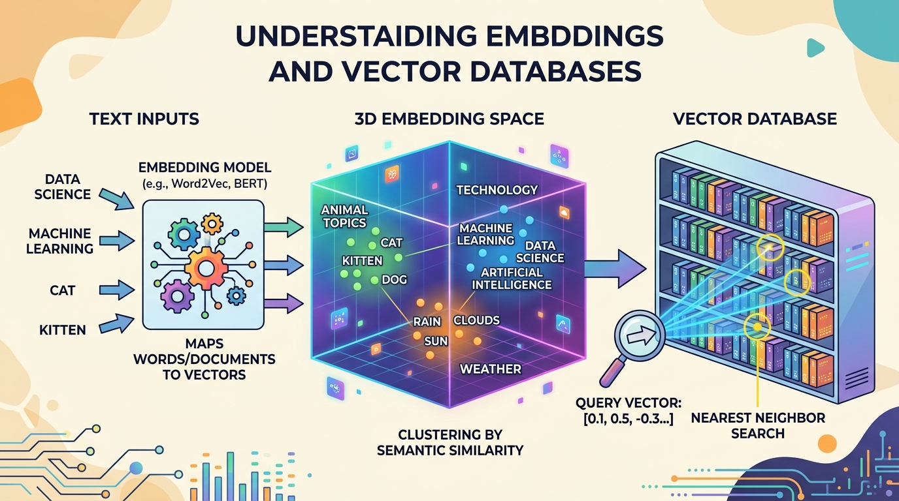

"You shall know a word by the company it keeps."
Vec AI Agent

Chapter Overview
Retrieval-augmented generation (RAG) has become the dominant pattern for grounding LLM outputs in factual, up-to-date information. At the foundation of every RAG system lies a trio of interconnected technologies: embedding models that convert text into dense vector representations, vector databases that store and index those vectors for efficient search, and document processing pipelines that prepare raw content for ingestion.
This chapter provides a comprehensive, bottom-up treatment of these foundational components. It begins with the theory and practice of text embedding models, covering the evolution from word-level embeddings to modern sentence transformers and the training objectives that produce high-quality representations. It then examines the data structures and algorithms that make approximate nearest neighbor search practical at scale, including HNSW graphs, inverted file indexes, and product quantization (techniques that parallel the optimization strategies used in LLM inference).
The chapter proceeds to survey the rapidly growing ecosystem of vector database systems, comparing purpose-built solutions like Pinecone, Weaviate, and Qdrant with library-based approaches such as FAISS and embedded databases like ChromaDB. Finally, it addresses the critical (and often overlooked) challenge of document processing and chunking, where poor design decisions can undermine even the most sophisticated retrieval infrastructure.
By the end of this chapter, you will be able to select and fine-tune embedding models for specific domains, design vector indexes that balance recall with latency, deploy and operate vector database systems in production applications, and build document processing pipelines that maximize retrieval quality.
Embeddings transform text into dense vectors that capture semantic meaning, and vector databases make those vectors searchable at scale. This chapter provides the retrieval infrastructure that powers RAG systems in Chapter 20 and grounds the conversational AI systems in Chapter 21.
If the word "vector" makes you picture arrows on a chalkboard from high school physics, you are closer to the truth than you might think. Embedding models are essentially saying: "This sentence points in a direction in 768-dimensional space, and that other sentence points in almost the same direction, so they probably mean similar things." It is geometry class all over again, just with several hundred more dimensions and considerably fewer protractors.
Prerequisites
- Chapter 01: NLP & Text Representation (vector spaces, similarity metrics)
- Chapter 04: The Transformer Architecture (attention, encoder vs. decoder models)
- Chapter 10: LLM APIs (working with embedding API endpoints)
- Comfortable with Python, NumPy, and basic data structures (graphs, hash tables, trees)
- Familiarity with database concepts (indexing, queries, CRUD operations)
Learning Objectives
- Explain the evolution from word embeddings (Word2Vec, GloVe) to sentence-level embeddings (Sentence-BERT, E5, GTE)
- Describe contrastive learning objectives and hard negative mining strategies for training embedding models (building on the transformer encoder architecture)
- Compare cosine similarity, dot product, and Euclidean distance as vector similarity metrics
- Explain HNSW graph construction and search, IVF partitioning, and Product Quantization at a technical level
- Evaluate vector database systems (Pinecone, Weaviate, Qdrant, Milvus, ChromaDB, pgvector) for different deployment scenarios
- Implement hybrid search combining dense vector retrieval with sparse keyword matching using reciprocal rank fusion
- Design document chunking strategies (fixed-size, recursive, semantic, structure-aware) appropriate for different content types, informed by tokenization mechanics
- Build end-to-end RAG ETL pipelines with document loading, parsing, chunking, embedding, and indexing
- Use MTEB benchmarks and custom evaluation sets to select embedding models for specific domains
- Implement incremental indexing and document versioning for production vector search systems
Approximate nearest neighbor algorithms have a wonderfully honest name. They are basically saying: "I cannot promise I will find the actual closest vector, but I will find something really close, really fast." It is the computational equivalent of a librarian who may not hand you the single best book on your topic but will reliably point you to the right shelf in under a millisecond.
Sections
- 19.1 Text Embedding Models & Training Word to sentence embeddings. Sentence-BERT and contrastive learning. Hard negative mining and Matryoshka embeddings. ColBERT late interaction. API embeddings, MTEB benchmark, embedding space geometry, and domain fine-tuning.
- 19.2 Vector Index Data Structures & Algorithms Brute-force nearest neighbor search and similarity metrics. HNSW graph internals. IVF partitioning and Product Quantization. Composite indexes, ScaNN, and the recall/latency/memory tradeoff landscape.
- 19.3 Vector Database Systems Vector database architecture and components. Pinecone, Weaviate, Qdrant, Milvus, ChromaDB, FAISS, LanceDB, and pgvector. Metadata filtering, hybrid search, and reciprocal rank fusion.
- 19.4 Document Processing & Chunking Document loaders and parsing. Chunking strategies: fixed-size, recursive, semantic, and structure-aware. Overlap and parent-child retrieval. Unstructured.io, LlamaParse, Docling. RAG ETL pipelines, document versioning, and incremental indexing.
- 19.5 Vision-Based Document Retrieval Retrieval techniques that operate directly on document images rather than extracted text, including ColPali, vision encoders for document understanding, and hybrid approaches combining OCR with visual embeddings.
What's Next?
In the next chapter, Chapter 20: Retrieval-Augmented Generation (RAG), we build complete RAG pipelines that ground LLM responses in real, up-to-date information.